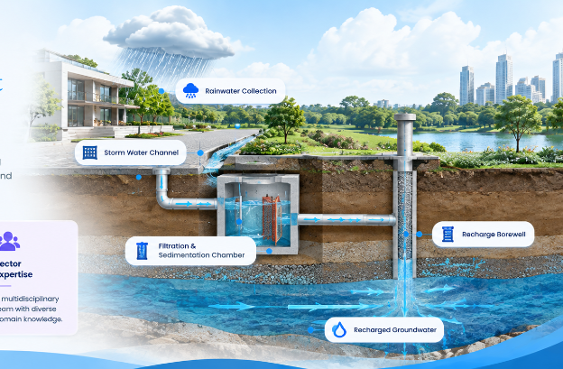

At Bharat Bhujal Tech Pvt. Ltd., our Geophysical Survey services provide scientific groundwater location identification before any drilling commences. Using state-of-the-art Electrical Resistivity Tomography (ERT), Vertical Electrical Sounding (VES), and VLF Electromagnetic sensors, we generate 2D and 3D subsurface resistivity profiles up to 400 meters deep.
This non-destructive survey eliminates the financial risks of dry or low-yield borewell drilling by precisely mapping aquifer geometry, rock fracture zones, water table depth, salinity levels, and optimal well point coordinates.
Eliminate dry borewell failures by targeting verified water fracture zones.
Determine exact water-bearing strata depths before mobilizing heavy rigs.
Avoid wasteful drilling iterations and optimize casing depth requirements.
Map deep rock fissures, fault zones, and high-yield permeable channels.
Evaluate expected yield capacity and seasonal water table fluctuation.
Pinpoint precise GPS coordinates for maximum long-term groundwater yield.
Study geology, terrain, existing wells, satellite data, and site requirements.
Conduct ERT, VES, VLF, and multi-electrode resistivity investigations on site.
Convert raw field resistivity data into high-resolution subsurface tomograms.
Identify aquifer boundaries, fracture paths, salinity, and water table levels.
Deliver certified GPS coordinates, recommended depths, and drilling instructions.
Our hydrogeologists combine multi-channel geophysical instruments with certified inversion software to decode complex subsurface geological formations.


Locating reliable irrigation borewell points for farms to safeguard crops during drought.

High-yield commercial water supply planning & CGWA NOC compliance audits.

Ensuring sustainable long-term water self-sufficiency for multi-story housing societies.

Subsurface structural stability, foundation water table checks & mega site audits.
Here are answers to the most frequent inquiries from property owners, industrial managers, and engineers before conducting a hydrogeological survey.
A geophysical survey eliminates guesswork by mapping underground rock fractures and water layers scientifically, preventing costly dry borewell failures.
Our multi-electrode ERT systems can accurately penetrate up to 400 meters (1,300+ feet) in both hard rock terrain and alluvial soil formations.
We deploy Electrical Resistivity Tomography (ERT), Vertical Electrical Sounding (VES), Very Low Frequency (VLF) electromagnetics, and seismic hydrogeology based on site geology.
Yes, by mapping subsurface rock resistivity contrasts, we identify the exact high-permeability fracture zones and mark precise GPS coordinates on the ground.
On-site field investigation usually takes 1 to 2 days depending on land acreage. Data processing and final report delivery take an additional 24 to 48 hours.
The report includes 2D/3D resistivity profiles, aquifer depth contours, recommended borewell points, target drilling depth, casing chart, and expected discharge yield.

We are committed to providing innovative and practical solutions for land, water and environment management.
Talk to our senior hydrogeologists for site survey & technical feasibility.